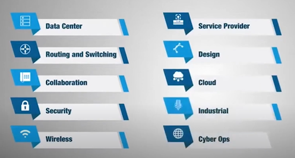
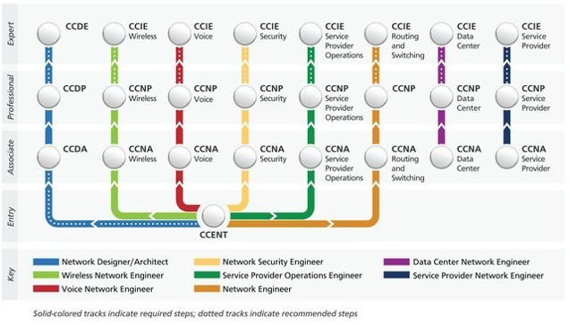
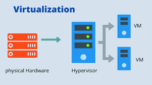
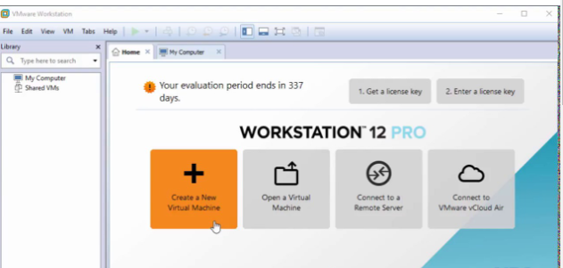
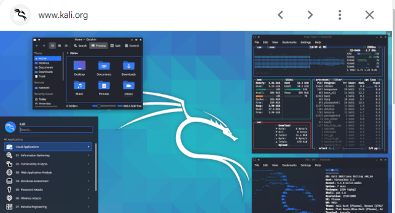
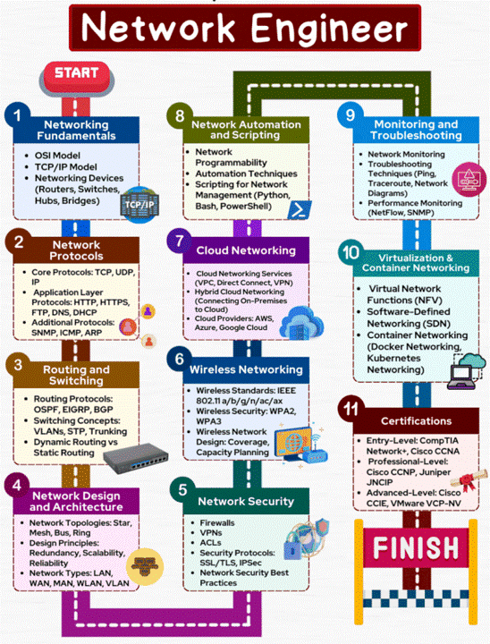

Network Roadmap
Your guide to mastering networking, from fundamental tracks to certifications, virtualization, and essential simulation tools.
Network Tracks
The networking field is divided into multiple specialized tracks. Explore key areas like Routing & Switching, Data Center, Security, and Cloud to find your specific area of interest.

Certification Hierarchy
Building your career step-by-step is essential. The certification hierarchy guides you from Entry-level (CCENT) through Associate (CCNA), Professional (CCNP), and Expert (CCIE) levels across various disciplines.

Virtualization
Virtualization is the process of creating a software-based, or virtual, representation of something rather than a physical one. It allows you to run multiple operating systems and applications on a single physical machine (Host) simultaneously using a Hypervisor. This technology is the backbone of modern network labs, enabling you to run routers, firewalls, and servers virtually on your local computer.


VMware Workstation Pro Interface
Oracle VirtualBox

Kali Linux Virtual Machine Environment
Network Simulation Programs
Network simulators and emulators allow you to build complex topologies and test configurations safely before deploying them in a production environment. Below are screenshots of the most common industry tools used in this course.

Cisco Packet Tracer - Network Topology

GNS3 - Advanced Network Simulation

EVE-NG - Emulated Virtual Environment

Wireshark - Packet Analysis & Sniffing
Essential Tool Downloads
Download the official tools required for your labs and assignments. Click the buttons below to get started.
Network Engineer Roadmap
Follow this step-by-step roadmap to go from networking fundamentals to advanced infrastructure and security concepts. It provides a clear learning path from START to FINISH.
